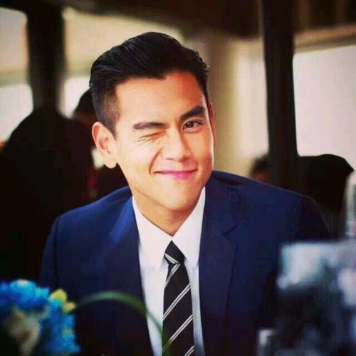

重要事件
主要成就
主要作品
生活照
生平
彭于晏
彭于晏，1982年3月24日出生于台湾省澎湖县，加拿大籍华裔影视男演员、歌手。
重要事件
彭于晏出生于台湾省澎湖县，出生时体重就已经有了5公斤。
从小就爱吃的他，在上大学之前体重就超过了180斤。
幼儿园大班开始就被挑中去拍摄各类广告，一直延续到小学三年级。
1995年，13岁的彭于晏和家人移民到加拿大，而后考入加拿大英属哥伦比亚大学，主修经济学。
大学时期，彭于晏爱上打篮球，因为天天运动，所以才瘦下来。
主要成就
- 2005年，参与拍摄董氏基金会防治忧郁症宣导短片《记录》。
-
2008年，受邀出席关怀失亲儿的“用爱灌溉微笑”公益活动，并担任公益大使。
-
2009年，担任至善基金会爱心大使，到越南关怀贫困儿童，还认养了两个女儿 。
-
2015 第34届香港电影金像奖最佳男主角奖 2014
第33届香港电影金像奖最佳男配角奖
-
2013 第50届台湾电影金马奖最佳男配角奖 2011
第48届台湾电影金马奖最佳男主角奖
- 2007 第44届台湾电影金马奖最佳新人奖
主要作品
-
彭于晏，1982年3月24日出生于台湾省澎湖县，加拿大籍华裔影视男演员、歌手。
- 2002年，因出演个人首部电视剧《爱情白皮书》，从而进入演艺圈。
- 2005年，因在仙侠剧《仙剑奇侠传》中饰演唐钰一角而受到关注。
- 2006年，主演剧情片《六号出口》。
生活照

生平
彭于晏是一个阳光、帅气、真挚、很有幽默感的大男孩。
从他的言谈中，会发觉他的谦逊与善学，很健谈，待人和和气气。
因为他阳光，人反应很快，所以会让人觉得他很好亲近。